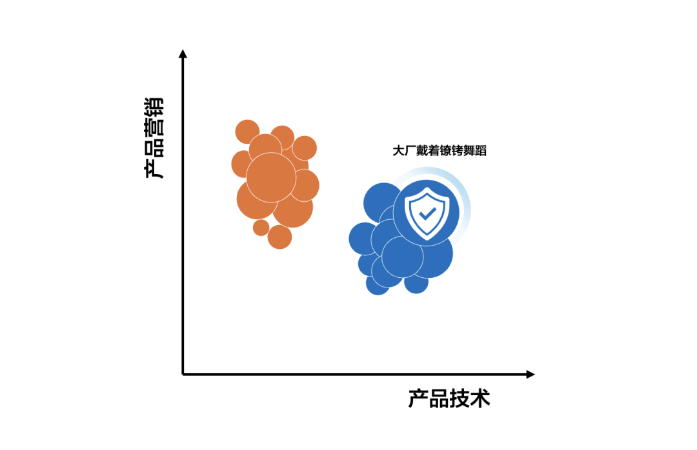
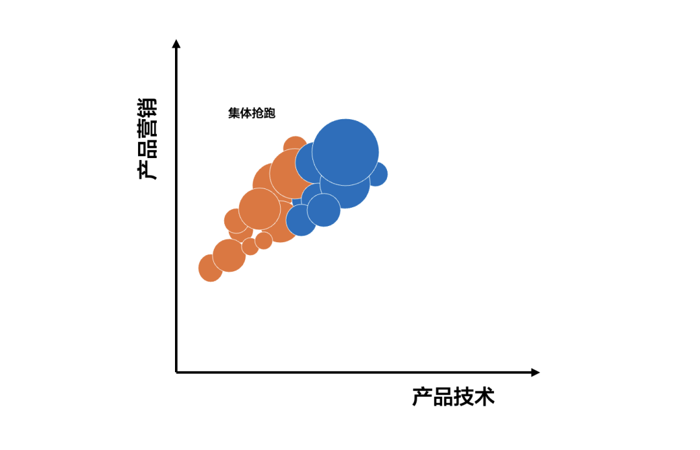

过去的 Q1，对我来说是一个充满变化和狂飙学习的 Q1。OpenClaw、Claude Code、Claude Cowork、Harness Engineering……一堆名字涌进来，业务随着趋势而变，追赶热点也成了常态。
当然，不只是我在追，整个市场都在追，而且追得比以往任何时候都早。
这让我回忆起杰弗里·摩尔那本《跨越鸿沟》。书里描绘的技术采纳曲线，把早期市场和主流市场之间画了一道深不见底的鸿沟。过去，我们最焦虑的是怎么从一小撮极客走向主流用户。
但在今天的 AI 与智能体应用市场，情况正在发生微妙的变化：我们甚至还没看清鸿沟有多宽，所有人就已经开始冲刺了。
人们买得不冲动，但买得很早
如果问现阶段谁在为大模型和 AI 应用型产品买单，一部分是被宏大叙事感召的 CXO，但更大一部分是藏在金融机构科技部、先进制造车企大数据团队、消费品头部厂商技术部门里的那批人。
Ta 们是典型的“技术狂热者”，但和上一轮云计算、大数据浪潮中的狂热者相比，这批人显得格外清醒。
Ta 们的构成大致有三类：
- 第一类是真正的技术敏感型，对新架构、新范式保持着近乎本能的追踪欲望。
- 第二类是“帮老板完成故事”的执行者，Ta 们需要找到可落地的技术支点，把战略 PPT 变成 demo。
- 第三类则是行业领导者的守城人，Ta 们担心的是：如果我不做，竞争对手做了，我如何交代。
这三类人有一个共同特点：信息敏感，且厌恶二手信息。
Ta 们不太相信经过公关润色的新闻稿，更喜欢看技术负责人亲自写的架构复盘、听闭门圆桌上的真实踩坑经验，或者看 GitHub 上还在冒热气的 commit。争夺这批用户的方式，是垂直论坛的深度渗透、圈层活动的精准触达，以及高质量技术干货的持续输出。
Ta 们买得很早、用得很早，在市场还没有成熟案例时，就已经开始动手。但他们买得并不冲动。这种“不冲动”不是等产品完美、等案例堆满，而是对技术路线本身有着极强的判断力：Ta 们能分辨出“这个方向大概率是对的，即使产品还不完善”，从而敢于在不确定性中做决策。
这是一种更高级的理性。
鸿沟还没看清，就开始抢跑了
过去两三年，我感觉到了一个有意思的变化。如果不严谨地把市面上所有做了产品和营销的厂商画在一张图上，X 轴是产品技术力，Y 轴是产品营销声势。
过去，这张图会呈现出明显的两个矩阵：
- 小厂商往往位于图的左上角：营销声势拉满，产品技术力相对靠后。身未动，声已响。做到 0.3 就敢说自己做到了 0.5。
- 大厂商则偏向右下角：产品技术力其实不差，甚至更扎实，但营销声势反而相对克制。因为大厂的公关审查机制更长、更严，每句对外宣传都要经过法务、合规、品牌的层层过滤。

大厂拥有一个创业公司永远无法企及的东西：品牌资产。哪怕产品崭新，也能天然获得更多客户的信赖。但硬币的另一面是，在新技术的对外表达上，大厂往往是戴着镣铐跳舞。
但现在，这张图正在发生明显的变化。
无论是大厂商还是小厂商，都在向右上角挤：营销声势都在拉高，产品尚未成熟就已经开始“抢跑”。当然，大厂的抢跑和小厂的抢跑，含金量并不一样：前者往往是提前半年宣布路线图，后者则更倾向于提前透支尚未验证的能力。但结果是一样的，市场听到的声音，比以前来得更早、更响。

为什么？因为 AI 应用市场正在经历一个“占位”阶段。早期流量红利巨大，谁先发出声音，谁就有可能被写进第一批案例集、被纳入第一批供应商名录、成为技术狂热者口中的“那个谁”。这种先发优势的诱惑力，已经大到让大厂开始松动自己的公关尺度，让小厂把自己的激进再往前推一步。
于是我们看到：产品还在内测，发布会已经开完了；技术方案还在验证，白皮书已经发出去了；甚至连 Demo 都还没稳定，就已经在说“赋能千行百业”了。鸿沟还没有看清，所有人都在抢那个身位，产品力似乎可以一边跑一边修。
你无法靠“安全”赢
这种集体抢跑，对我们个体带来的直接后果是：产品营销人面临的环境正在变得前所未有的不确定。
技术迭代速度在加快，市场声音鱼龙混杂，今天说 A 重要、明天又说 B 才是核心痛点。过去那种按季度制定营销计划、按部就班推进的方式，已经不太够用了。
在这种环境下，如果只是老老实实等产品完美再发声，你大概率会输。因为等你准备好了，定义权已经被别人拿走了。
那产品营销人能做什么？不是退回去求“安全”，而是用两种更主动、甚至有点“不安全”的方式介入。
第一，主动暴露你对技术边界的真实理解。不是等产品彻底成熟了再宣传，而是在技术还不完善的时候，就敢于说出“我们现在能做到什么、不能做到什么、下一步打算攻克什么”。这种诚实的不完美，反而比一张精致但虚假的完美蓝图更能赢得技术狂热者的信任。
第二，捕捉市场声音和客户诉求的变化，把市场噪音转化成产品洞察，而且抢在研发团队自己发现之前。客户在论坛上骂什么、竞品在哪些场景里被反复提及、投资人最近在追问什么，这些信息如果只停留在营销层面，那就只是噪音；如果能传递到产品侧，就有可能成为下一个版本的方向。
产品营销人在今天的角色，不再是跟在产品后面“包装故事”，而是用商业化的视野，帮助产品在不确定中找到那条更可能赢的路径。
这需要你比研发更懂市场，比市场更懂技术。很难，但只有这样才能摆脱“安全区”的被动。
结语
维特根斯坦说，语言的界限就是世界的界限。放在 AI 产品营销的语境里，这句话可以翻译成：你能说清什么，你的产品边界就在哪里。你只能赢得你能够清晰表达的市场。
这一轮集体抢跑，本质上是一场“定义权”的争夺。谁先发出声音，谁就有可能被记住；谁的定义被广泛接受，谁就有可能成为赛道的默认选项。但也正因如此，市场上充斥着太多“提前说出来的话”：产品还在内测，故事已经讲到了千行百业。
问题是，技术狂热者比任何用户都更敏感。Ta 们听得见话术，也辨得出虚实。那些被过度透支的表达，终将在 Ta 们面前失效。于是悖论出现了：抢跑是必要的，但说假话跑不远；说真话又可能显得不够“性感”。
怎么解？
我想可能解法就是：用真实的边界，去划定可信的疆域。你能说清自己现在能做到什么、下一步要攻克什么，你的产品就有了一个虽不完美但可被信任的轮廓。这比一张华丽的空头支票，更能赢得那些“买得不冲动”的人。
回到个体身上来说，强者追求自由，弱者寻找安全。对于 AI 时代的产品营销而言，寻找安全意味着永远做一个跟随者：等别人定义好赛道、等产品完全成熟、等市场教育完成再入场。但这套游戏的规则就是这样：
你无法靠“安全”赢。
说起来，最近让我不断学习的这些新名字，也都有一个共同点：没有一个是等完全成熟了才出现在我们面前的，它们都是跑在最前面的那些人，所创造的。这些人没有一个追求“安全”。
认识到了这套规则，你可以选择离开这场狂飙的游戏，也可以选择带着清醒的认知，躬身入局。